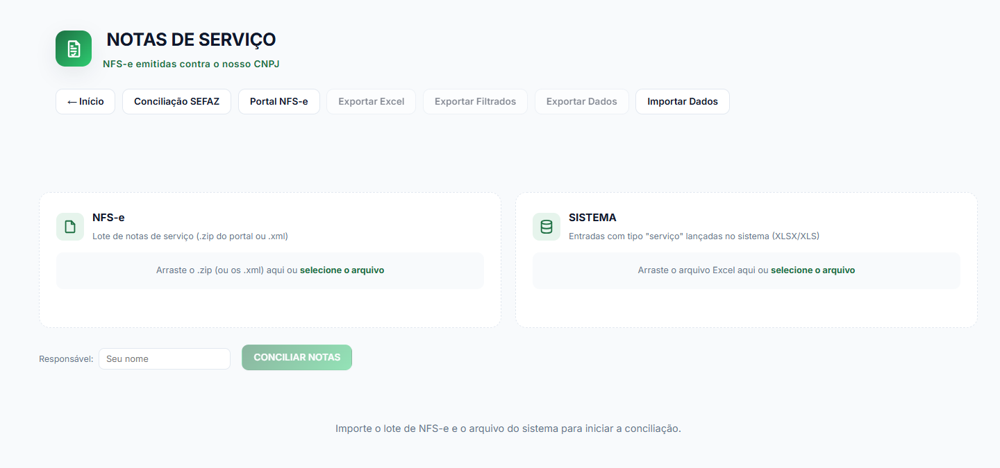

Para acessar a plataforma: Clique aqui

Como utilizar
Baixe os XMLs das notas de serviço
Acesse qualquer plataforma que disponibilize os XMLs das notas emitidas contra o seu CNPJ.
Como exemplo vamos usar o qive (antigo arquivei).
- Acesse o Qive (arquivei).
- Faça login.
-
Puxe o menu lateral caso esteja recolhido.

-
Clique em NFS-e.

-
Filtre apenas pela sua filial.

-
Clique para filtrar período personalizado.

-
Alimente conforme o período do fechamento.

-
Role até o fim da página e marque para exibir 100 linhas (para
conseguir exportar tudo).

-
Role até o cabeçalho da tabela e marque todos.

-
Clique para baixar XMLs em zip.

Baixe as entradas em notas de serviço do sistema
Acesse o sistema da sua loja:
⚠️ Atenção: Use o sistema Web!
Aqui está no jeito mais rápido: pesquisando.
Mas você pode conferir esse mesmo relatório em:
- Compras
- Compras
- Entrada de produto
- Relação de compras no período
Pule o passo 1, caso já tenha seguido os passos acima para acessar a
Relação de compras no período
-
Clique no botão de pesquisa e digite:
relação de compras no período
-
Coloque o período desejado.

Dica: Ao realizar o fechamento de um determinado mês, considere também os primeiros dias do mês seguinte.
Por exemplo, se o fechamento for referente a julho e estiver sendo realizado no dia 05/08/2026, utilize o período de 01/07/2026 a 05/08/2026. Isso é importante porque podem ter sido lançadas, nos primeiros dias de agosto, notas fiscais referentes ao mês de julho. -
Marque o depósito como
--Todos--.
-
O tipo de entrada coloque serviço.

-
Role a tela para baixo e clique em
Resumida.
-
Clique em gerar

-
Gere o arquivo em Excel.

Nesse relatório também gerar os serviços de frete, que serão classificados como "sistema s/ nfs-e"